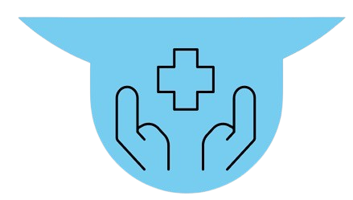

Membentuk generasi digital unggul, kreatif, dan adaptif menghadapi era industri 5.0
Pelajari Lebih LanjutFakultas Kebidanan dan Keperawatan telah menjadi lembaga pendidikan terkemuka yang didedikasikan untuk menghasilkan tenaga kesehatan yang sangat terampil. Selama bertahun-tahun, fakultas ini terus berkembang, membina lingkungan yang menekankan pendidikan berkualitas, keunggulan klinis, dan penelitian inovatif. Komitmen berkelanjutan terhadap standar akademik dan profesional tercermin melalui pengakuan yang konsisten dari Badan Akreditasi Nasional Pendidikan Tinggi (BAN-PT).


Fakultas Keperawatan dan Kebidanan bekerja sama dengan banyak mitra untuk pengembangan ilmu kesehatan.

.png)
.png)


Menjadi Fakultas unggulan nasional dalam mengembangkan socio-technopreneurship pada Ilmu Keperawatan dan Kebidanan untuk menghasilkan tenaga kesehatan dan IPTEK Kesehatan melalui pengelolaan tridarma yang mengedepankan nilai-nilai profesionalisme.
Pimpinan Fakultas merupakan jajaran akademisi dan profesional yang bertanggung jawab dalam mengarahkan visi, misi, serta kebijakan strategis fakultas.

Dekan
Fakultas Keperawatan dan Kebidanan memiliki program studi unggulan untuk mendukung program pendidikan.

Program Studi Diploma Tiga Keperawatan merupakan pendidikan vokasi yang dirancang untuk mencetak perawat profesional dengan keterampilan klinis yang kuat.
Pelajari Lebih LanjutProgram Studi Sarjana Ilmu Keperawatan dirancang untuk mempersiapkan mahasiswa menjadi perawat profesional yang kompeten dan beretika.
Pelajari Lebih LanjutProgram Studi Kebidanan membekali mahasiswa dengan pengetahuan dan keterampilan dalam memberikan perawatan komprehensif bagi perempuan, ibu, dan bayi baru lahir.
Pelajari Lebih LanjutProgram Studi Profesi NERS dirancang untuk melengkapi lulusan sarjana keperawatan dengan kompetensi klinis dan profesional dalam praktik keperawatan.
Pelajari Lebih LanjutProgram Studi Pendidikan Profesi Bidan dirancang untuk menghasilkan bidan profesional dan kompeten dalam memberikan pelayanan kesehatan ibu dan anak.
Pelajari Lebih LanjutProgram Studi Magister Keperawatan mengembangkan pengetahuan dan keterampilan tingkat lanjut, mempersiapkan lulusan menjadi peneliti dan praktisi keperawatan unggul.
Pelajari Lebih Lanjut
Senin, 20 Oktober 2025
Menjadi Arsitek Profesional Melalui Pendidikan Berbasis Desain dan Teknologi di UNPRI.
Baca Selengkapnya.png)
Senin, 20 Oktober 2025
Mencetak Generasi Digital Unggul Melalui Socio-Technopreneurship di UNPRI.
Baca Selengkapnya.png)
Senin, 20 Oktober 2025
Sinergi Pendidikan dan Pemerintah Daerah: UNPRI Perluas Kolaborasi Strategis.
Baca SelengkapnyaDengar langsung pengalaman inspiratif dari alumni kami.
Dalam kehidupan selalu ada yang namanya Problem, ilmu yang saya dapatkan dari prodi Teknik Industri sangat membantu dan mematangkan saya menjadi seorang problem solver!

Ass. Ka. Bag F&M Dept & Vice Energy Manager
PT INDUSTRI KARET DELI
Di Fakultas Keperawatan dan Kebidanan, setiap langkah belajar adalah panggilan untuk memberi makna dan harapan bagi kehidupan. Wujudkan perubahan dimulai dari sentuhanmu.
Daftar Sekarang